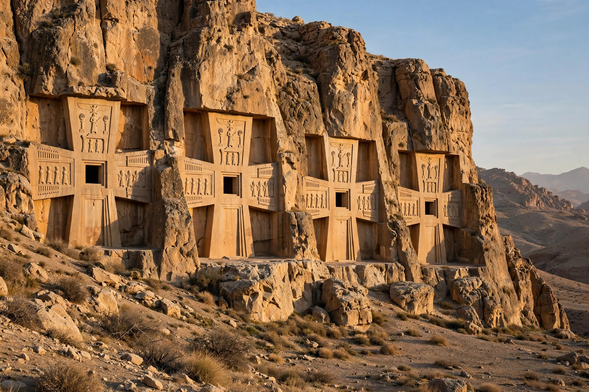

Naqsh-e Rostam ("Image of Rostam") is an ancient necropolis about 12 km northwest of Persepolis in Fars Province, Iran. Cut into a towering cliff face are the monumental rock tombs of four Achaemenid kings — Darius I, Xerxes I, Artaxerxes I and Darius II — and below them a series of Sasanian rock reliefs celebrating royal investitures and victories, including the triumph of Shapur I over the Roman emperors. Local tradition associated the carvings with the mythical hero Rostam, giving the site its name.
| Naqsh-e Rostam | |
|---|---|
 The Achaemenid tombs | |
| Location | Near Persepolis, Fars Province, Iran |
| Periods | Achaemenid (c. 500 BC) to Sasanian (3rd–4th c. AD) |
| Features | 4 royal tombs; 7 Sasanian reliefs; Ka'ba-ye Zartosht tower |
Each tomb facade is cut as a great cross. The upper register shows the king standing before a fire altar, upheld by throne-bearers representing the empire's subject peoples; the central section mimics the columned front of a palace, through which a doorway leads to the burial chamber. Darius I's tomb is identified by his great trilingual inscription (DNa), a statement of royal ideology: "What is right, that is my desire... I am not hot-tempered." Opposite the cliff stands the square tower known as the Ka'ba-ye Zartosht ("Cube of Zoroaster"), whose purpose — fire temple, treasury or royal archive — remains debated; its walls carry Shapur I's famous inscription (the Res Gestae Divi Saporis) in three languages.
Sasanian kings carved seven reliefs beneath the tombs to link themselves to the ancient glory above. The most famous shows Shapur I on horseback receiving the submission of the Roman emperor Valerian (captured in 260 AD) while the emperor Philip the Arab kneels — one of the most striking images of antiquity. Others depict the investiture of Ardashir I, founder of the dynasty, receiving the ring of kingship from the god Ahura Mazda.